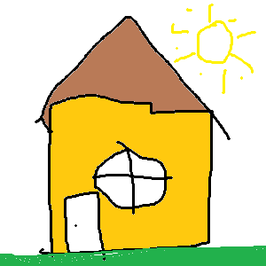

Lehel on kasutatud map area käsud
palun kliki hiirega erineva alale pildil

Muru on tihe ja madal heintaimedest koosnev ja sageli niidetav
ühtlane taimkate. Muru on üks aedade ja parkide levinumaid
haljastuselemente. Muru kasutatakse ka mitmesuguste spordiväljakute kattena.